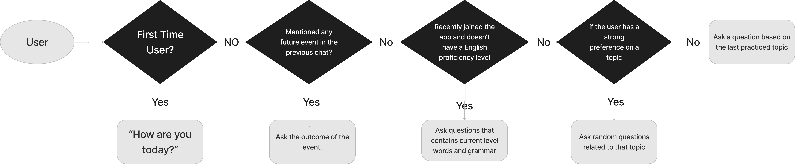

01
Overview
CONTEXT
Recreated an app for a startup with their key technology from scratch.
Submitted the design to the startup founders for review.
MY CONTRIBUTION
02
Final Prototype

03
Impact
APPROVED DESIGN
The founders found our "short-exercise" feature is an amazing design to improve user experience.
It can increase user engagement and app popularity.
Submitted Version

My design after the project is due
APPROVED ALGORITHM
My suggested algorithm will also be implemented for development.

04
Background: Recreate an app for a startup with their key technology

05
Understand users' needs and solve them
06
The Highlight Of This Project
THE ADDED FEATURE
In the feature ideation meeting, I suggested that we can add a Short Exercise card in the home page.
WHY?
HOW?
My suggested algorithm:
07
The Self Assessment Feature
THE DELETED FEATURE
The result of user testing shows that users are not happy with the self-assessment feature.
WHY?
BUT...
IMPLEMENTATION
Instead of having the Self Assessment survey, the AI can evaluate users' grammar, fluency and vocabulary level during chat.
Potential algorithm for implementation
08
Sketches Based On Feature Ideation

09
The App Flow Map and Low Fidelity Prototype

My design decisions
10
High Fidelity Prototype and First Round Critics
Major Changes After the in-class Critique

Critics Summary
- Text across the app was too small. Specifically, “view all” buttons, “browse all”, topic names, and sign up instructions, which we made bigger.
- The login screen flows were confusing. We streamlined this into one sign up page and one login page.
- We had inconsistent use of bookmark icons for saved topics. We added bookmark icons to every topic to allow users to save topics.
- We had inconsistent titles for the “Continue Practicing” sections on the home and notebook pages. We made these sections’ titles the same to make it clear these were the same section.
- We used red text for mistake corrections, which was seen as too aggressive. We changed this to blue.
- Our prototype did not show that corrections were made in real time on the chat screen. We added grammatical corrections and a pop-up explanation.
- To better use the touch interface, we added a swipe up functionality to continue the conversation on the transcript screen.
- The profile page had no way to edit account details, so we added edit buttons.
Final High-Fidelity Prototype
 Link to play with the prototype in Figma
Link to play with the prototype in Figma
11
Online User Testing
To better understand our product's usability, we submitted our revised prototype to a remote user testing service (UserTesting.com) for real user testing.
Tasks Summary
- Try to chat about the topic “Social Gathering”
- Continue the conversation about “Snack Time.”
- Go back to the transcript from chatting about "Snack Time"
- View all topics from home page
- Sign out the app
Difficulties
- All succeed. One user suggest to bold the title.
- All struggled. The drag up functionality was not intuitive.
- All struggled. They were confused because of the failure of task 2.
- All found it easy.
- All found the button where they expected to see.
Potential Interface Changes
- Replace the dragging function with our original design: button. But we also think this difficulty is caused by the fact that Figma requires to drag to mimic the behavior of swipe up. Users won't find it difficult if they play the prototype on an actual device.
- Add a "start a new conversation" option to users on a topic they practiced before.
- Change the topic images more relevant to the topics.
12
My Design
Even though the project was due, I spent some time on my own to polish the app.
Before

After
Home Page Design
- Simplified the landing page design
- Changed topic images to a more consistent image set
- Redesigned the blue bookmark to a yellow star, differentiates it from the theme color
Continue Conversation
- Added a popup before continuing the conversation.
- Allow users to choose if they want to continue last conversation, start over, or view the history.
- Added a preview of last conversation to remind users of last conversation.
- Added the study level feature to encourage users to continue practicing.
- Added dates in history page.

Popup


Before
After
Grammar Checker Popup
- Redesigned the popup to fit more detailed information.
- Allow users to practise after learning the grammar rule.
Review Mistakes
- Redesigned the review mistakes section from regular card to flashcard.
- The flashcard allows users to think before looking at the answer.
- Added the discard and save mistakes feature.
- Added which conversation the mistake was from.

Before
After